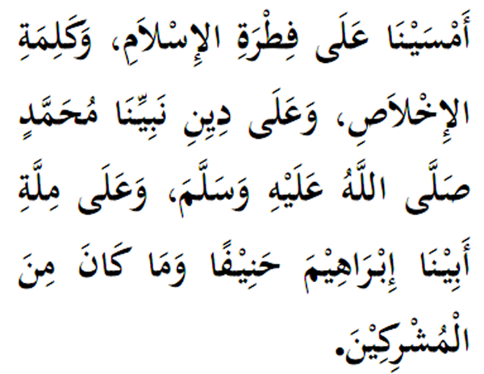

|
Terjemahan "Kami hayati suasana petang ini atas landasan fitrah dan perwatakan islam. Berpegang kepada kalimah Ikhlas (dan prinsip) keikhlasan. Berpegang kepada agama Nabi-Mu Muhammad (SAW), yang juga agama bapa kami (Nabi) Ibrahim dengan setulus hati. Dan (Nabi) Ibrahim sama sekali bukan seorang yang musyrikin." Fadhilat Wirid Rasulullah (SAW) selalu mengajar kami (para sahabat) membacanya apabila masuk waktu pagi dan petang. (Dikeluarkan oleh Ibn Abdullah, Imam Ahamad) |
 |